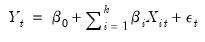
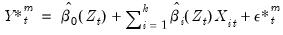
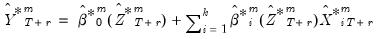

|
|
|

are no longer simple coefficients, but are instead functions of the variable
. Here, the relationship is linear in variables, but non-linear in parameters. In contrast to the linear regression specification Equation (38.1), the coefficients are no longer constant, but instead vary across observations. Non-linear phenomena are easily accommodated in this framework, coefficient relationships are dynamic, and interpretation of coefficient relationships is still intuitive.
in Equation (38.5).
The bandwidth employed in Equation (38.5) may be termed the estimation final bandwidth. There are several popular methods used to select an optimal final bandwidth:
.
.
, and some bandwidth
, we estimate functional coefficients and use these to compute the standard error of the local polynomial regression residuals. The standard error and an estimated non-parametric degrees of freedom is then used to obtain a functional AIC value. The optimal bandwidth is obtained as the
which minimizes the AIC summed over the
.
, we compute the residual standard error of the functional coefficients regression obtained at each evaluation point
and sum these values. We search for the value of which minimizes this sum, and use this value to obtain an optimal
value. For non-Gaussian kernels, the optimal bandwidth employs canonical kernel transformations as outlined in Marron and Nolan (1988), using the constants in Härdle, et al.(1991, p. 76).
is the inter-quartile range of the residuals.
and bandwidth
, we compute a functional RSC value that depends on the residual variance, the polynomial degree of the functional coefficients estimation, and a number representing the effective number of local observations. The optional pilot bandwidth
is chosen to be the value that minimizes the sum of these values.
, a functional coefficient model using
different sub-series of lengths and then computes the average mean square error (AMSE) from the
-step ahead forecast errors starting at observation . The resulting
AMSE values are summed to form a functional objective value at
. The optimal pilot bandwidth
is the value that minimizes the sum of these functional objectives across the
.
-step ahead forecast can be obtained by substituting for the conditional expectation the corresponding fitted values
, the idea is to simulate a large number, say
of draws of .

 and evaluated at .
 and explanatory variables
and explanatory variables  is linear:
is linear: can be challenging.
can be challenging. of interest, we estimate a local regression with kernel weighted squared residuals. Then, estimating this regression for a set of
of interest, we estimate a local regression with kernel weighted squared residuals. Then, estimating this regression for a set of  traces out the functional coefficients relationship.
traces out the functional coefficients relationship. . The resulting objective function is:
. The resulting objective function is: .
. .
.  .
. and
and  , and not in the corresponding and .
, and not in the corresponding and . (small bias, large variance). Alternatively, when , the functional coefficient estimator reduces to the mean of
(small bias, large variance). Alternatively, when , the functional coefficient estimator reduces to the mean of  (large bias, small variance). Between these two extremes we may select a bandwidth that balances bias and variance.
(large bias, small variance). Between these two extremes we may select a bandwidth that balances bias and variance.  .
.  by an even integer, .
by an even integer, . is observed over the period
is observed over the period  , and suppose a forecast is required for for some integer .
, and suppose a forecast is required for for some integer . . We may evaluate this predictor in one of the following ways:
. We may evaluate this predictor in one of the following ways: are set to the available actual values.
are set to the available actual values. , depend on the lagged endogenous variable, they may be set to the actual lagged endogenous or lagged forecast values
, depend on the lagged endogenous variable, they may be set to the actual lagged endogenous or lagged forecast values  as appropriate.
as appropriate. -step ahead forecast is obtained as the mean of the
-step ahead forecast is obtained as the mean of the  simulated series at that horizon of interest,
simulated series at that horizon of interest, is the
is the  -th draw (with replacement) from the within sample estimation residuals (Huang and Shen, 2004; Harvill and Ray, 2005).
-th draw (with replacement) from the within sample estimation residuals (Huang and Shen, 2004; Harvill and Ray, 2005). are functional coefficients estimates computed at the evaluation points
are functional coefficients estimates computed at the evaluation points  using the original data .
using the original data .  and are actual values, if available, for static forecasting. For dynamic forecasting,
and are actual values, if available, for static forecasting. For dynamic forecasting,  or will be set to the actual lagged endogenous
or will be set to the actual lagged endogenous  or lagged forecast values as appropriate.
or lagged forecast values as appropriate. -th draw, we generate a bootstrap draw of the dependent variable for using
-th draw, we generate a bootstrap draw of the dependent variable for using and are functional coefficients estimates computed at the evaluation points
and are functional coefficients estimates computed at the evaluation points  using the original data
using the original data  .
.  -th simulation are then given by
-th simulation are then given by  , where the and
, where the and  are the original and , or are lags of if the originals contain lags of .
are the original and , or are lags of if the originals contain lags of . -step ahead individual forecast for the
-step ahead individual forecast for the  -th simulation is given by the fitted values:
-th simulation is given by the fitted values:  or that depend on lagged endogenous variables will be set to actual values or lagged forecast values , as appropriate. For static forecasting,
or that depend on lagged endogenous variables will be set to actual values or lagged forecast values , as appropriate. For static forecasting,  or
or  will be set to actuals.
will be set to actuals.